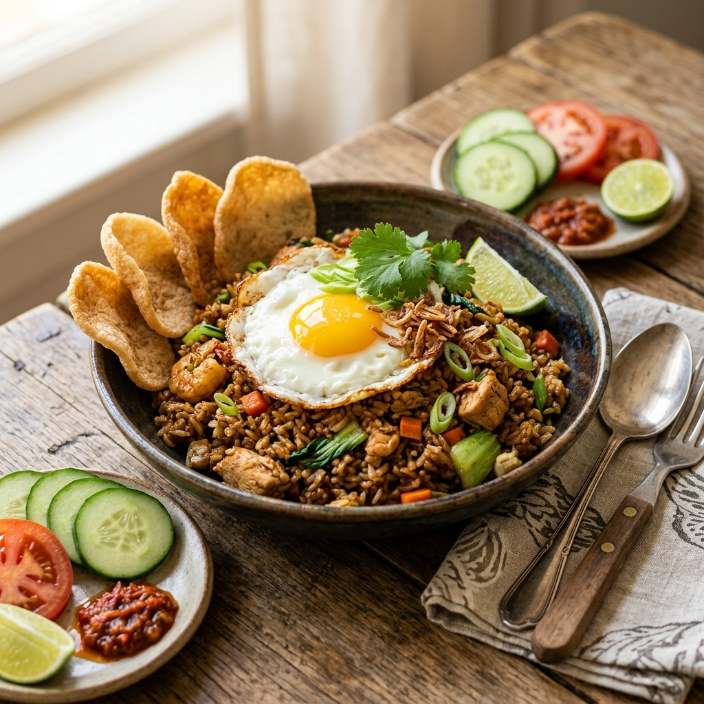
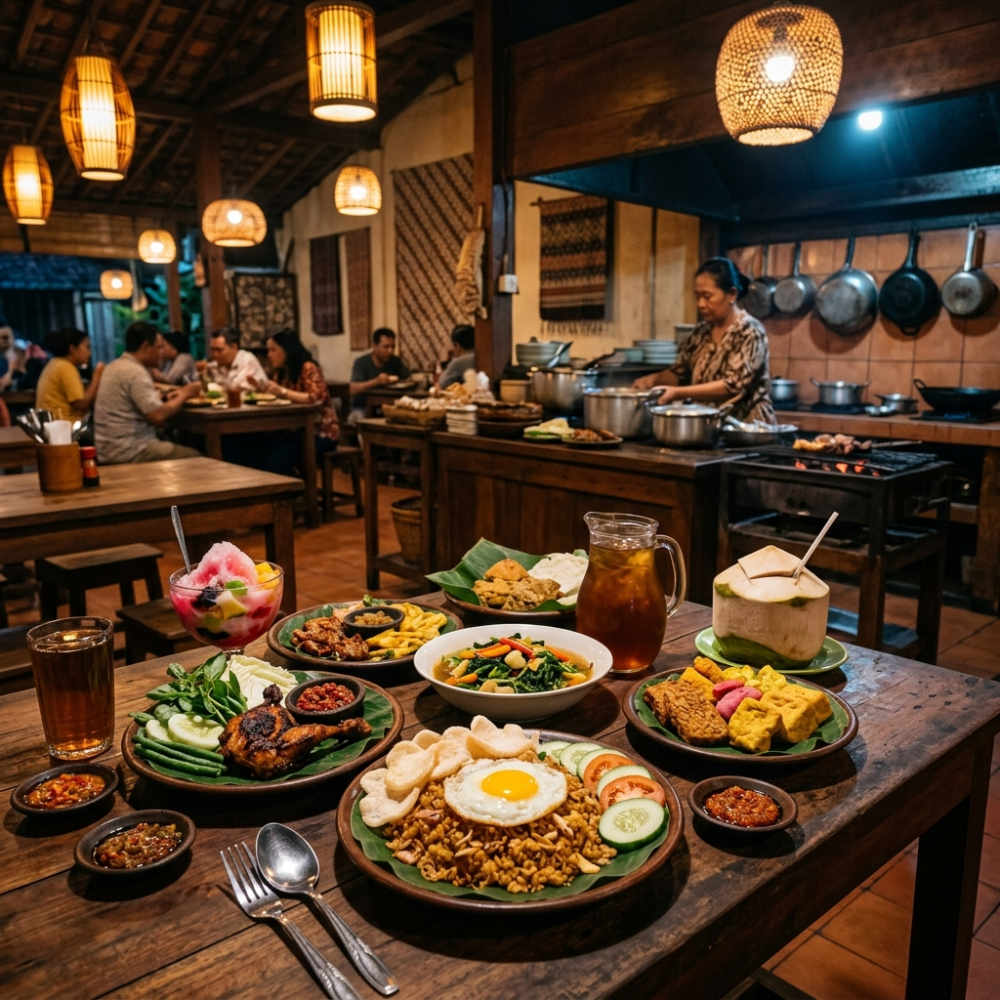
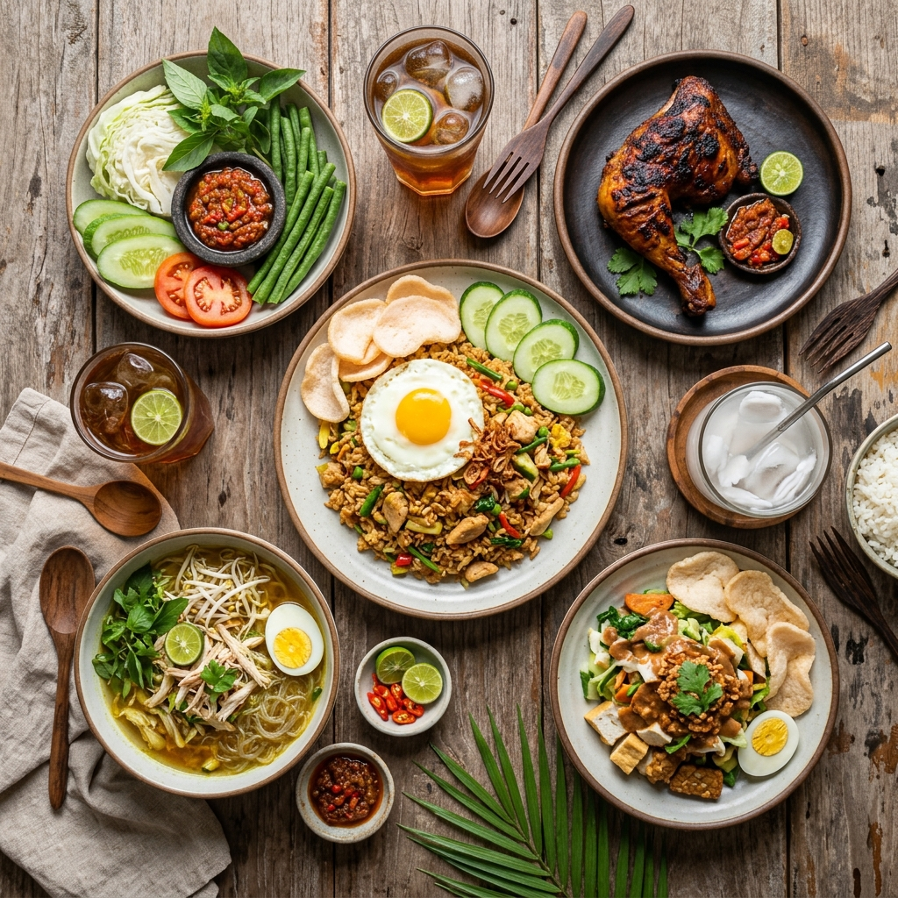

🔥 TerlarisMakanan Utama
Nasi Goreng Spesial
Nasi goreng gurih dengan telur mata sapi, ayam suwir, dan sayuran segar. Disajikan dengan kerupuk dan acar.
Rp 20.000
Pesan

Masakan Rumahan, Rasa Istimewa
Menu lezat dengan bahan-bahan segar pilihan. Cocok untuk makan siang dan malam bersama keluarga.

Setiap hidangan dibuat dengan penuh cinta dan dedikasi untuk kepuasan Anda.
Warung Teladan berdiri dengan satu misi sederhana: menyajikan masakan rumahan yang lezat, bersih, dan terjangkau untuk semua kalangan.
Dengan pengalaman lebih dari 5 tahun melayani ribuan pelanggan setia, kami terus berkomitmen untuk menggunakan bahan-bahan segar pilihan setiap harinya.
Dimasak fresh setiap hari
Dimasak dengan sepenuh hati
Enak tanpa menguras kantong
Kepuasan pelanggan adalah prioritas utama kami.
"Nasi gorengnya enak banget! Bumbunya meresap sempurna. Sudah langganan hampir 3 tahun, rasa konsisten selalu enak."
"Ayam bakarnya favorit banget! Bumbunya khas, dagingnya empuk. Harganya juga terjangkau banget untuk rasa sepremium ini."
"Pelayanannya ramah, makanannya enak, tempatnya bersih. Pesan via WhatsApp juga gampang banget, langsung direspons!"
Kami siap melayani Anda setiap hari. Yuk, kunjungi atau pesan sekarang!
Jl. Imam Bonjol No. 2, Kelurahan Sidomukti,
Kota Punara, Kalimantan Timur
Setiap Hari
08.00 – 21.00 WIB
+62 123 456 789
info@warungteladan.id